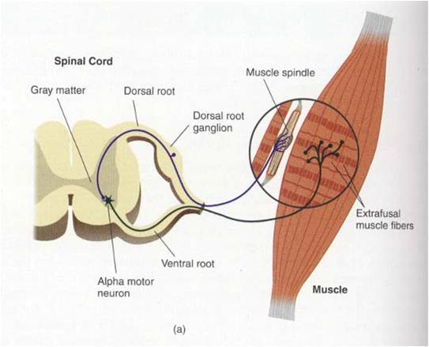

El principal mecanismo de información en el cuerpo lo constituye un sistema de neuronas que se comunican unas con otras y para propósitos puramente didácticos, dividimos este sistema en un Sistema Nervioso Central (SNC) formado por el cerebro y la médula espinal, y en un Sistema Nervioso Periférico (SNP) que une el sistema nervioso central con los receptores sensoriales, que reciben información proveniente del medio externo e interno, y con los músculos y glándulas que son los efectores de las decisiones del SNC. Esta información es llevada por axones motores y sensoriales del SNP en haces de cables eléctricos que conocemos como nervios; por ejemplo, la información que recibe cada ojo es llevada al cerebro en los millones de axones que forman el nervio óptico.
La información dentro del sistema nervioso es manejada por tres tipos de neuronas. Las neuronas sensoriales, que mandan información desde los tejidos del cuerpo y los órganos sensoriales hacia la médula espinal. Cuando el cerebro procesa esa información involucra una segunda clase de neuronas, las interneuronas, que forman su sistema de comunicación interna. Como resultado de ese procesamiento, el sistema nervioso central manda instrucciones hacia los tejidos del cuerpo por medio del tercer tipo de neuronas, las motoneuronas. Como hay unos pocos millones de neuronas sensoriales, algunos millones mas de neuronas motoras, y miles y miles de millones de interneuronas, es claro que la mayor parte de la complejidad de nuestro organismo se basa en los sistemas de interneuronas.
LA NEURONA
La neurona es la célula nerviosa, derivada del neuroblasto. Es la unidad funcional del sistema nervioso pues sirve de eslabón comunicante entre receptores y efectores, a través de fibras nerviosas. Consta de tres partes:
| Parte | Imágen | Descripción |
|---|---|---|
| Cuerpo o Soma | Compuesto fundamentalmente por núcleo, citoplasma y nucléolo. | |
| Dendritas |  |
Compuesto de terminaciones nerviosas. |
| Axón | Terminación larga, que puede alcanzar hasta un metro de longitud. |
NERVIOS
Los nervios son, generalmente, haces o conjuntos de axones, salvo los nervios sensoriales que están constituidos por dendritas funcionales largas que van desde el "asta" dorsal de la médula hasta los receptores sensoriales y cumplen la función de conducir los impulsos como los axones. Las distintas fibras que componen un nervio se mantienen unidad por tejido conjuntivo.
| Nervio | Imágen | Descripción |
|---|---|---|
| Por su origen | ||
| Raquídeos | Los nervios raquídeos tienen elementos viscerales y somáticos Los viscerales están relacionados con las estructuras vecinas a los aparatos digestivo, respiratorio, urogenital y el sistema vascular y la mayor parte de las glándulas. Los somáticos están relacionados con los tejidos de revestimiento corporal y los músculos voluntarios. | |
| Craneales | Son 12 pares de nervios que nacen del tronco cerebral, a nivel del cuarto ventrículo, por encima del bulbo y sirven en su mayoría a sentidos especializados de la cara y la cabeza. Su funcionamiento es mixto, es decir, contiene fibras sensitivas y motoras. | |
| Por su función | ||
| Sensitivos | Conducen los impulsos que informan de las distintas sensaciones. | |
| Motores |  |
Conducen los impulsos para las funciones motrices. |
| Mixtos | Contienen fibras sensitivas y fibras motoras. | |
| Por los receptores | ||
| Exteroceptivos | Para impulsos producidos por los estímulos ajenos al cuerpo: tacto, temperatura, dolor, presión, y órganos sensoriales como el ojo y el oído. | |
| Propioceptivos |  | Para estímulos nacidos en el mismo cuerpo: músculos, tendones, articulaciones y los relacionados con el equilibrio. |
| Interoceptivos |  |
Para los impulsos procedentes de las vísceras: sistema digestivo, respiratorio, circulatorio, urogenital y las glándulas. |
MÉDULA ESPINAL
La médula espinal es una masa cilíndrica de tejido nervioso que ocupa el conducto vertebral, tiene 40 ó 45 cm de longitud y se extiende desde el agujero occipital, donde se continúa con el bulbo hasta la región lumbar.
Está protegida por las membranas meníngeas: piamadre, aracnoides y dura-madre y por el líquido cefalorraquídeo.
Desde la región de la segunda vértebra lumbar, donde termina la médula, hasta el cóccix, desciende un filamento delgado
llamado "filum terminale" y las raíces de los nervios sacros y lumbares, formando un manojo de fibras que recibe el nombre de "cola de caballo".
De la médula salen 31 pares de nervios que le dan un aspecto segmentado: 8 cervicales, 12 torácicos, 5 lumbares, 5 sacros y coxígeo.
La médula está compuesta por una sustancia gris formada por cuerpos neuronales, y por la sustancia blanca formada por fibras mielinizadas ascendentes y descendentes.
Las funciones que cumple la médula son las siguientes:
EL ENCÉFALO
El encéfalo es la parte del sistema nervioso central encerrada en la cavidad craneal.Se divide en:
El cerebro posterior o romboencéfalo se encuentra localizado en la parte inmediatamente superior de la medula espinal y está formado por tres estructuras: el bulbo, la protuberancia o puente, y el cerebelo. En él se encuentra, también, el cuarto ventrículo.
El cerebro anterior o proencéfalo se divide en diencéfalo y telencéfalo. El diencéfalo comprende: el tálamo, el hipotálamo, el quiasma óptico, la hipófisis, los tubérculos mamilares y la cavidad llamada tercer ventrículo.
EL BULBO
Es una estructura que se halla en el extremo superior de la médula y como prolongación de ella. En el hombre mide unos 3 cm de longitud.
A nivel del bulbo cruzan algunos haces nerviosos dirigiéndose al lado opuesto del cerebro después de juntarse con los que habían cruzado en la médula.
De igual modo las fibras que proceden del cerebro cruzan en el bulbo para dirigirse al lado opuesto a través de la médula.
Funciones del Bulbo:
EL CEREBELO
Es una estructura con muchas circunvoluciones situada por detrás del cuatro ventrículo y de la protuberancia y unido al tronco cerebral por haces de fibras aferentes, que le llevan impulsos procedentes de la médula, bulbo, puente y cerebro medio y anterior. A su vez, de los núcleos del cerebelo nacen fibras eferentes para cada una de estas regiones.
En el cerebelo la sustancia gris está en la corteza, mientras que la blanca está en el centro.
El cerebelo tiende a ser grande y bien desarrollado en los animales capaces de movimientos precisos y finos; y su extirpación produce pérdida de la precisión y de la coordinación de los movimientos.
Funciones:
LA CORTEZA CEREBRAL
La corteza cerebral es una lámina gris, formada por cuerpos de neuronas, que cubre los hemisferios cerebrales y cuyo grosor varía de 1,25 mm en el lóbulo occipital a 4 mm en el lóbulo anterior.
Se calcula que en la corteza del cerebro humano hay unos siete millones de neuronas.
Aproximadamente la mitad de la corteza forma las paredes de los surcos de los hemisferios y no está expuesta en la superficie cerebral.
Las neuronas de la corteza están dispuestas en capas bastante diferenciadas. Las fibras nerviosas que nacen de ellas establecen múltiples conexiones entre las distintas capas y zonas, lo que permite que una señal llegada a la corteza se extienda y persista. Así mismo, los impulsos eferentes que nacen de un área pueden llegar por las conexiones a otras, o a zonas cercanas a la primera haciendo que continúe la actividad.
Las neuronas de asociación hacen que los impulsos que llegan a la corteza duren un tiempo considerable y se extiendan a gran número de neuronas. Así un pequeño ruido percibido por la corteza puede suscitar una actividad prolongada de las neuronas del área correspondiente y provocar una respuesta externa.
Funciones de la corteza:
Bibliografía
1.-https://www.monografias.com/trabajos11/sisne/sisne.shtml 2.-http://www.facmed.unam.mx/Libro-NeuroFisio/06-SistemaNervioso/CNS-Overview/SistNervioso.html 3.-Gerardo Relloso S., S.M.S. PSICOLOGÍA Ciclo Diversificado (Ciencias y Humanidades). Ediciones Cobo. Edición 1988. Caracas – Venezuela.
ENCICLOPEDIA AUTODIDACTICA. ANATOMÍA. LEXUS, Edición 2001